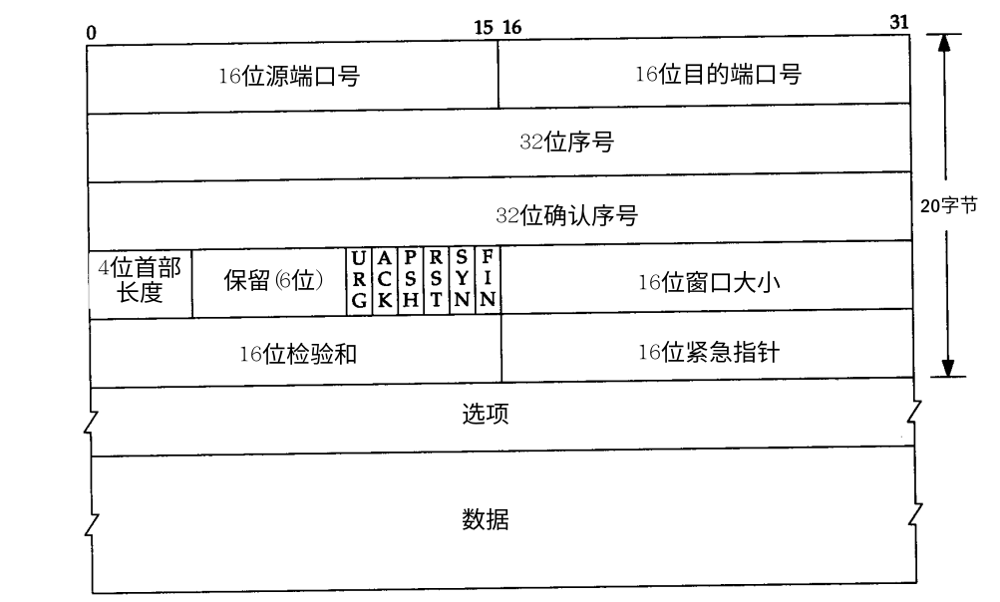

想写一下对消息的思考，就复习了一下tcp协议，没想到一下子被tcp给惊艳到了，这里简单做一下笔记。在下一篇对消息进行更进一步的思考。
参考《TCP/IP 详解 卷1》的17-21章
概述
总计5章的内容，第一章简单介绍了协议的基本信息，概述性的介绍tcp如何保证可靠，以及tcp的报文；第二章介绍tcp的连接与断开；第三章介绍交互时场景下TCP的数据流；第四章介绍块数据下TCP的数据流；第五章介绍流控机制，包括超时、重传以及避免堵塞的机制。
既然是为了研究消息的机制，我们将重点放在可靠性传输以及流控方面，也就是第五章内容
报文

简单说一下部首长度以及这几个flag。
通常情况下，TCP的header是20 字节，当选项(option)存在时，可以扩展到60字节。那这个60字节是怎么算的呢？
在协议中，有4bit的部首长度，最长也就是15，但这15并不是指的byte，而是word，tpc协议的word是32bit，也就是4byte，于是15*4 等于60 bype的长度。（应该也是上图画成4字节一行的原因）
两个32位序列号，代表两端的序列都是各自的序列，而不是一个序列
这几个flag，从后往前说
FIN 与 SYN 是连接握手与关闭时使用的，捂手时使用SYN，关闭时使用FIN
RST 是重新连接的标志
PSH 是正常传输数据时使用
ACK 是对数据的应答，表示 确认序号（acknowledgment number）有效
URG 是紧急模式的标志，表示 紧急指针（URG Pointer）有效，并且进入紧急模式。从接收到该标志一直到URG Pointer之间的数据，都是紧急数据。TCP本身并没有对 URG模式有应用，它只是提供了一种方式机制，如何使用是交给上层应用的。
很多实现中，将URG这些数据称作 out-of-band 数据，但如果是out-of-band数据，建立另外一个连接会更好一些。URG的使用在Telnet和Rlogin中有应用，URG不是本篇的重点。
ps： 报文设计
- 首先报文正常是固定长度的，支持扩展长度，并且长度可以控制
- sender与receiver的报文格式是一致的
- 通过flag既类似于报文的type也类似与cmd，并且标示某些数据区是否启用
连接建立与关闭
上图就是3次握手与4次bye bye的序列，其他就不说了，只说一点：为什么建立只需3次握手而断开需要4次？
TCP协议是双工协议，去时的路与来时的路大概率不是一条路，建立连接是要保证两条路都通，并且2端都需要保证2条路都通，3次握手是保证这个机制的最少次数。
断开为什么是4次？因为它只表明，一端不再发送数据了，并不保证另外一端正好也完成工作了。就像给领导汇报工作，你汇报结束了，领导还有话说呢。
那有没有可能同时闭嘴呢，确实有可能，碰巧了。
有关闭就有同时打开，整个的状态机如下图了。
ps：目前手机以及微信语音都没有支持同时打开的操作，都会提示对方正在忙，从这点tcp确实做的不错。
交互数据流
延迟ack
交互数据指的远程登录这种情况，输入数据后，在你屏幕上回显，数据都比较小，呈现碎片化，而且对实时性有要求的场景。
这里遇到的问题是如何减少碎片，碎片来自哪里呢，主要来自ACK，它只用TCP头的20字节就可以进行应答，完全可以与其他数据合并使用。
如果完全靠合并岂不是影响网络的实时性，自然就出现了一种用定时器的折中方法，既能减少碎片，又能保证实时性。
大部分的实现这个delay是200ms，TCP会延时一个ACK 200ms，如果这期间有数据发送，就合并ACK直接发送过去，超时情况，就单独发送一个ACK。
这里可以看到ack的200ms并不总是200ms的延时，这又是为什么呢。这是因为内核200ms定时器是固定的，并不是为每个应答都设置一个定时器，但数据到达的时间随机，距离下一个时钟也就随机在1-200ms之间。比如在0ms上设置的定时器，到120ms时数据来了，那这个delay就是200-120=80ms了。
Nagle算法
上图中，是在局域网（LAN）中的情况，数据的RTT很短，只有16ms（0.0165），在广域网（WAN）下，RTT会高起来，在这种情况下，对ack去碎片化的要求更高，这样就提出了Nagle算法，虽然名字很高大上，其实很简单，既然本身你的实时性就不高，就不怕再降低一点：当一个tcp连接有数据没有被ack，那么小的segment（包括ack），就不会发送，直到该数据被ack了。
上图中也遵循这delay ack，在segment 12中，由于超时触发了ack。
这种场景是网络是慢的，数据准备是快的场景下。
块数据流
滑动窗口（sliding window）
与交互数据流不同，块数据流的数据很大，比如传输一个大的文件，小碎片并不是问题，如何快速、高效的传输数据才是核心。
既然要高效，就需要加缓存，用空间来换时间的原则适用这里，自然接收端需要告诉发送端，自己还有多少剩余的缓存空间，并且在需要一个动态的场景中去告诉它。这样就引入了window。
这是一个比较理想的网络环境的例子，网络的RTT以及接收端的处理都很快速，窗口一直没有被填满。win代表着接收端可以接受的空间，对发送端而言，还有部分的数据在网络中飘着，所以它可以发送的容量 = window大小 - 在网络中飘着的数据大小，用图表示滑动窗口如下：
上图中的示例，用滑动窗口表示如下：
第7个segment，确认后，发送的容量有3072（4096win - 未确认的1024）.
窗口的大小随系统不同大小是不同的，一般是4096字节，小的有2048，大的有8192或者16384字节。
慢启动（slow start）
滑动窗口是通过接收端来控制流速的一种算法，慢启动与下边的拥塞避免算法，是发送端控制流量的算法。
慢启动假设数据发送的速率等于接收端ack的速率，慢启动为TCP增加了第2个window：congestion window（cwin）。cwin以指数的形式增长，sender可以发送的数据大小为min（win, cwin）。cwin初始情况下，被设置为1个segment的大小，当有第一个ack到达后，增加为2个segment，当这2个segment被ack后，cwin增加为4个segment，以此类推。
网络性能低于接收者性能情况下，会达到了网络容量的上限，开始出现丢包的情况，这告诉sender它发的太快了，cwind太大了，就需要用到重发以及拥塞避免了，这在下一节介绍。
在慢启动中，可以估算网络的容量有多大，sender通过RTT来计算网络容量：
公式： capacity(bits) = bandwidth(bits/sec) × round-trip time(sec)
示意图如下:
重传与拥塞避免
超时重传
超时重传面向的问题是，发送端发送出了数据，但接收端一致没有ack，发送端心里嘀咕“怎么回事，收到没有啊”，等待一段时间后，自己重传一下吧。
超时重传的核心问题是，如何确定这个“超时时间”，首先它不能是个固定值，不能跟200ms的ack等待合并一样简单，其次它需要与回路时间RTT有关系，但由于RTT本身也是浮动的，所以是在浮动的RTT基础上，再建立一个靠谱的超时时间：RTO(Retranmission Timeout)。
第一代的RTO计算方法：
1 | R <- αR + (1-α)M |
其中，α、β都是常量，推荐值是α=0.9，β=2。M是本次RTT的测量值，R是对RTT的一个加权平均值，其中以往的状态权重90%，本次权重10%。
这时 RTO = 1.8R + 0.2M
第二代的RTO计算方法：
1988年Jacobson提出，第一代算法中，当遇到RTT变化范围很大时，这个RTO就跟不上变化了，毕竟本次的占比太小，这样就会导致不必要的重传。尤其达到网络容量上限的时候，重传更会加重网络的负载。这样就提出了基于均值与方差来计算RTO的算法，如下：
1 | Err = M - A |
这里g、h是常量，g取0.125，h取0.25。Err是均值偏差，A是加权平均的RTT（以往的状态占7/8，本次占1/8），D是均值偏差的加权平均(以往的状态占0.75，本次偏差占0.25)。
这里的偏差用的均值偏差，是对标准差的逼近。
由此：RTO = (7/8)*A + (1/8)M + 3D + M - A = (9/8)M - (1/8)A + 3D。当本次M突然增大时，RTO的变化更快一些。
注意：这里的计时跟交互数据延迟ACK类似，计时通过定时器来完成，所以并不是实际时间，而是定时器的正数倍。具体的示例见书上。
这里附上一个图：
快速重传
超时重传是发送端自己数据超时，而快速重传是接收端再三ack发送端，可能存在丢包。伯克利的TCP实现中，对收到的重复ACK进行计数，当收到第三个时，就假定一段报文丢失，并重传那段报文。
上图中，收到了6657第3次重复ack后，重传了63号报文。
拥塞避免
拥塞避免算法可以看做慢启动的后续，它与慢启动一起组成了TCP控速的完整算法。整个算法描述如下：
拥塞避免算法和慢启动算法需要对每个连接维持两个变量:一个拥塞窗口 cwnd和一个慢启动门限ssthresh：
- 对一个给定的连接,初始化cwnd为1个segment, ssthresh为65535个字节（2^16）.
- TCP输出不能超过min(cwnd， win)
- 当拥塞发生（超时或者重复确认），ssthresh被设置为当前窗口[min(cwnd,win)]的一半，最小是2个segment。如果是超时引起的阻塞，cwnd被设置为1个segment大小
- 当新数据被确认时，就增加cwnd，增加的方法依赖于执行慢启动还是拥塞避免。如果cwnd <= sshresh，则进行慢启动，增加方式就是指数方式；反之就是拥塞避免，每次将cwnd增加1/cwnd。
。
上图以segment来显示cwnd与ssthresh。
ps：1/cwnd并不是真实数，而是：cwnd = cwnd + segsize*segsize/cwnd + segsize/8
这样看，当cwnd比较小是，△cwnd会大一些，而cwnd较大时，△cwnd会小一些。
具体示例这里不给出了，只上一张cwnd随着发送序号变化的图:
这里可以看到cwnd经过在发送重传的时候，经历一个水平线之后，又开始上涨，这里对应的是由于接收端的重复ack引起的快速重传，以及快速恢复算法。
快速恢复算法
快速重传时，说明两端仍有正常的数据流，所以之后往往不经过拥塞避免算法，而是快速恢复算法。该算法如下：
当接收到第3个重复的ack时，ssthresh设置为当前cwnd的一半，重传丢失的报文。设置cwnd为ssthresh + 3×segment 的报文大小
每次收到另外一个重复的ack，cwnd增加1个segment的大小
- 当下一个对新数据（因为重传成功而进行的ack）的ack达到时，设置cwnd为ssthresh的值（也就是原cwnd的一半），这时采用的就是拥塞避免算法了。
回顾
回顾这块内容，从报文到连接的建立与断开，再到传输碎片化的交互数据，一致到块数据的传输。对于消息，有这么几个可以借鉴的地方。
如何感知数据的丢失？
- 发送端通过超时
- 接收端通过重复ack
只对数据丢失负责，不对ack丢失负责
ack本身是有状态的，代表着ack该序号之前的所有序号面对一个变化的网络，发送端如何确认以多快的速度发送？
- 接收端缓存的情况 => 滑动窗口
- 网络的容量 => 对与RTO的预测算法通用也是对RTT的动态预测，也就是对网络容量的预测
- 对自身发送速率控制 => 慢启动+拥塞避免，通过外界响应（超时、重复ack），不断通过调整自身（cwnd），来达到对外界变化的拟合，从这一点看，TCP有了反馈回路，也可以说是应激性。
从另一方面看，它不断的努力，不断的碰壁，不达目的，从未放弃。